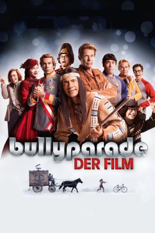
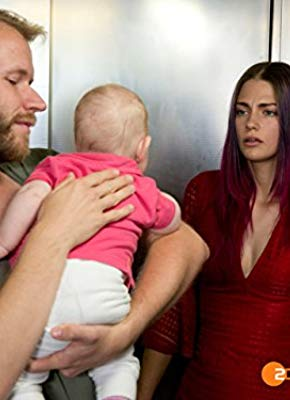

#8323 Bullyparade - Der Film
 
 IMDB-Wertung: 4.9 / 10
IMDB-Wertung: 4.9 / 10  Metascore: 0
Metascore: 0 
Der aus fünf einzelnen Episoden bestehende Film greift verschiedene aus der Bullyparade bekannte Figuren auf: Die Brüder Kasirske möchten ihre Tante zum neunzigsten Geburtstag überraschen und reisen zurück in die Zeit der DDR. Auf der Suche nach einem Wochenend-Domizil gelangen Sissi, Franz und der Feldmarschall versehentlich in ein Geisterhaus. Die beiden Blutsbrüder Winnetou und Old Shatterhand legen einen lange währenden Konflikt bei. Lutz und Löffler berichtet von ihren Erlebnissen an der Wall Street. Die Crew des (T)Raumschiff Surprise soll den Planeten der Frauen vor einem Bösewicht schützen. (wikipedia)
Jahr: 2017
Dauer: 99 Minuten
FSK: 6
Land: Deutschland Studio: Warner Bros.Tonspuren:
Untertitel:
Auflösung: 1080p (1920x800) Größe: 4280 MB
Genre: Komödie
Regisseur:  Michael Herbig
Michael Herbig
Drehbuch: Warner Bros.
Soundtrack: Ralf Wengenmayr
Darsteller:
 Michael Herbig als Winnetou / Mr. Spuck / Sissi / Sigi Solo / König Ludwig / Lutz / Kastagnette 1
Michael Herbig als Winnetou / Mr. Spuck / Sissi / Sigi Solo / König Ludwig / Lutz / Kastagnette 1 Christian Tramitz als Old Shatterhand / Captain Kork / Kaiser Franz / Mr. Moneymaker / Jörg Kasirske / Bronko Kulicka / Kastagnette 2
Christian Tramitz als Old Shatterhand / Captain Kork / Kaiser Franz / Mr. Moneymaker / Jörg Kasirske / Bronko Kulicka / Kastagnette 2 Rick Kavanian als Schrotty / Feldmarschall / Dr. Schmitz / Tschango / Löffler / Makler Dimitri / King Klon / Yeti / James Beam / Jens Kasirske / Pavel Pipowic / Standesbeamter / Kastagnette 3
Rick Kavanian als Schrotty / Feldmarschall / Dr. Schmitz / Tschango / Löffler / Makler Dimitri / King Klon / Yeti / James Beam / Jens Kasirske / Pavel Pipowic / Standesbeamter / Kastagnette 3 Sky du Mont als General Motors
Sky du Mont als General Motors Alexander Schubert als Lieutenant
Alexander Schubert als Lieutenant- Cornelia Ivancan als Anette
- Laurence Burton als Kiowa Häuptling
 Jeanne Goursaud als Babsirella
Jeanne Goursaud als Babsirella- Jasmin Lord als Susirella
- Lena Gercke als Cameo (uncredited)
 Elyas M'Barek als Indian (uncredited)
Elyas M'Barek als Indian (uncredited)- Lena Meyer-Landrut als Cameo (uncredited)
 Matthias Schweighöfer als Cameo (uncredited)
Matthias Schweighöfer als Cameo (uncredited) Jürgen Vogel als Cameo (uncredited)
Jürgen Vogel als Cameo (uncredited)- Ivanka Brekalo als Brautjungfer
- Robert Alan Packard als Medizinmann
- Rahul Chakraborty als Simultanübersetzer
- Diana Herold als Mary Ann
- Valentina Zell als Nancy
- Larimar López Arcos als Tschimalis
- María Del Pilar Gómez als Apanatschi
- Vincente Raul Gonzalez als Assiniboine Häuptling
- Irshad Panjatan als Costa
- Jürgen Klaar als Kellner
- Liu Hao als Anchorman
- Kim Girschner als Chinese Tycoon
-  Laura Berlin als Monirella
- Jane Chirwa als Mozzarella
- Denise Balaz als Doppelrella 1
- Desire Balaz als Doppelrella 2
- Liz Howard als Gospel-Mamarella
- Wataru Hayase als Beamschieber 1
- Thanh Vu Nguyen als Beamschieber 2
- Andreas Fröhlich als Erzähler
- Peter Maffay als Cameo (uncredited)
Datei: X:\2017(A-F)\Bullyparade - Der Film (2017, FSK6, 1920x800).mkv seit 23.02.2018
Festplatte: HD 2017(A-Z)-2018(A-F)
 Es gibt insgesamt 152 Filme in der Gruppe '2017(A-F)'
Es gibt insgesamt 152 Filme in der Gruppe '2017(A-F)'